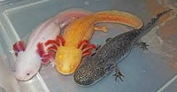
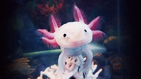
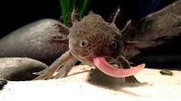

There's a lot more to this animal than just being adorable! You can follow the links below for specific axolotl topics, such as:
Or just scroll through the page and enjoy!

As you can see from the photo above, Axolotls come in a wide variety of colors, especially in captivity. Adults are usually between 6 and 18 inches in length, and weigh up to 8 ounces. As a neotenic amphibian, it retains the gills it is born with which protrude from the back of its head. They have four lizard-like limbs, and a tadpole-like dorsal fin, making them resemble a fish/frog hybrid. This grotesque combination of features, coupled with the naturally smile shaped mouth, makes these creatures highly desirable as pets.

One of the Axolotl's most interesting traits is its ability to regenerate. While most amphibians possess some regenerative ability, the axolotl can regenerate entire limbs, bones, and tissue systems without scarring. The Axolotl is docile enough to be handled by humans. Although they have a row of vestigial teeth, they have never been known to bite humans. Their teeth are generally used to grip food rather than chew it. Unlike other amphibians, the Axolotl spends its entire life in the water.

Axolotl's are carnivorous. In the wild, they eat worms, insects, and small fish. In captivity, the most common source of food is brine shrimp and salmon pellets. Juveniles have been observed to exhibit cannibalism in rare cases, but this only occurs when there is no other sufficient source of food. As previously mentioned, their teeth are primarily used for gripping, so their food is generally swallowed whole.
There are several organizations dedicated to the study and preservation of the axolotl. Below are just a few of them.
| Name of organization | Service provided |
|---|---|
| UNESCO | Operates the only site to which axolotls are native |
| Chinampa Refuge | Working to restore the lake bed of Xochimilco |
| Wildlife Conservation Society (WCF) | Works to preserve wildlife and habitats around the world |